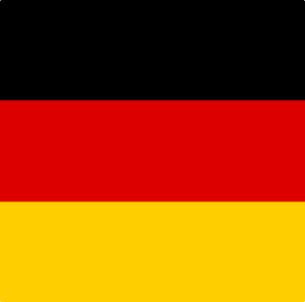

V roce 2016 jsem se rozhodla jít s dobou, a tak jsem se začala věnovat it světu. Zpočátku jsem vše okolo něj
proklínala, avšak za nedlouho jsme se stali kamarádi, i když někdy máme rozepře, jak už to tak bývá. Nečekala
jsem, jak tomuto světu propadnu. Při práci na počítači potřebuji mít zatažené závěsy, it vtipům jsem se
začala smát a přátelé mi nerozumí, když se bavím o mé práci.
Ráda se učím novým věcem, ale bez praxe to samořejmě nejde, proto se to snažím vždy propojit s
prací, abych se neustále zdokonalovala, měla ze sebe dobrý pocit a práce se stala mou zábavou.
Zde jsem si prohloubila své geoinformatické, ale především informatické znalosti. Mou hlavní činností bylo automatizované testování geoportálu Wegas.cz, dále jsem pracovala především jako programátor, díky čemuž jsem nabral zkušenosti webscrappingu. Moji vedlejší činností bylo také vytváření scriptů pro ostatní oddělení v rámci šetření práce.
Ve spolupráci studentů různých fakult MU jsme vytvořili projekt jehož cílem bylo otevřít BVV veřejnosti. K nalezení by zde byla např. studentská kavárna, knihovna, vnitřní i venkovní hry, sportovní areál atd.
Zde bylou mou hlavní pracovní činností připrava dokumentů obchodním zástupcům. Této práci jsem vděčná především za získání vědomostí v oblasti energetického poradenství.
B2 B1
Žaneta Rezková
Štoky 63
58253 Štoky
Česká republika